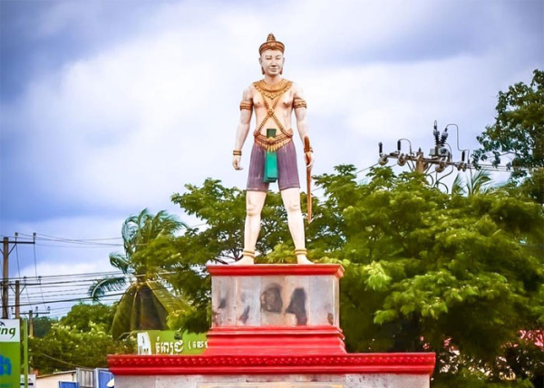

អំពីខេត្តត្បូងឃ្មុំ
ខេត្តត្បូងឃ្មុំ ស្ថិតនៅភាគខាងកើតនៃព្រះរាជាណាចក្រកម្ពុជា និងជាខេត្តថ្មីមួយ ដែលត្រូវបានបំបែកចេញពីខេត្តកំពង់ចាមក្នុងឆ្នាំ២០១៣។ ខេត្តនេះមានភាពល្បីល្បាញដោយសារចម្ការកៅស៊ូដ៏ធំទូលាយ ដំណាំកសិកម្ម និងសកម្មភាពពាណិជ្ជកម្មតាមព្រំដែនជាមួយប្រទេសវៀតណាម។
ប្រវត្តិសង្ខេប
ខេត្តត្បូងឃ្មុំត្រូវបានបង្កើតឡើងជាផ្លូវការនៅថ្ងៃទី៣១ ខែធ្នូ ឆ្នាំ២០១៣ ដោយបំបែកចេញពីខេត្តកំពង់ចាម។ ក្រោយការបង្កើត ខេត្តនេះបានអភិវឌ្ឍយ៉ាងឆាប់រហ័សលើវិស័យកសិកម្ម ឧស្សាហកម្ម និងពាណិជ្ជកម្ម ដោយសារទីតាំងជាប់ព្រំដែនអន្តរជាតិ។
កន្លែងទេសចរណ៍សំខាន់ៗ
- ទឹកធ្លាក់ហោង
- ចម្ការកៅស៊ូចម្ការលើ
- វត្តហាន់ជ័យ
- សួនសាធារណៈសួង
- ផ្សារសួង
- ច្រកទ្វារព្រំដែនអន្តរជាតិត្រពាំងផ្លុង
ទីតាំងភូមិសាស្ត្រ
ខេត្តត្បូងឃ្មុំ ស្ថិតនៅភាគខាងកើតនៃប្រទេសកម្ពុជា មានព្រំប្រទល់ជាប់ខេត្តកំពង់ចាម ខេត្តក្រចេះ ខេត្តព្រៃវែង និងព្រំដែនប្រទេសវៀតណាម។ ទីតាំងនេះអំណោយផលដល់ការដឹកជញ្ជូន ពាណិជ្ជកម្មអន្តរជាតិ និងការអភិវឌ្ឍវិស័យកសិកម្ម ជាពិសេសការដាំកៅស៊ូ និងដំណាំឧស្សាហកម្មផ្សេងៗ។